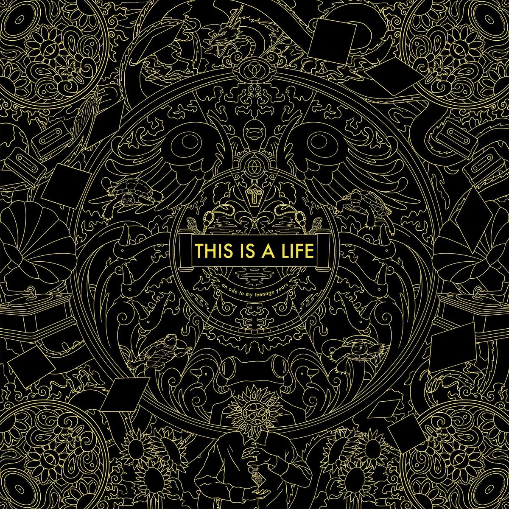
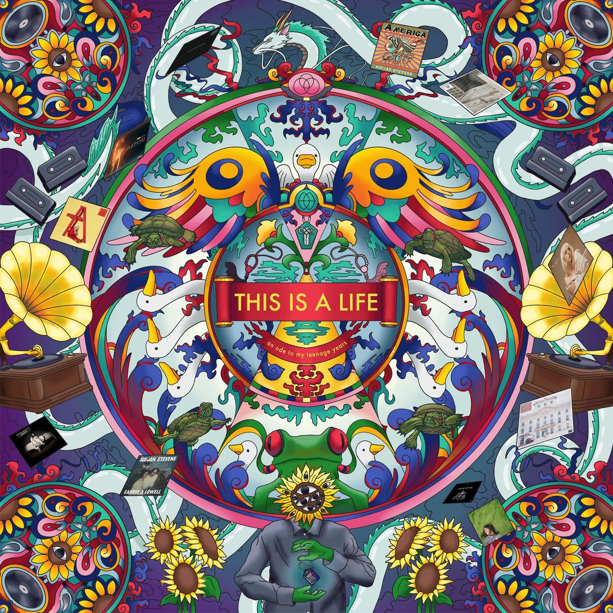

Think like an engineer,
build like a designer.
I'm a Computer Engineering & Innovation and Design undergraduate at NUS. This portfolio documents a wide breadth of my personal and work projects, spanning many different multimedia and multidisciplinary fields.
My Projects:
NUS IDEATE 2026 — Makeathon Prototype
As the team's only engineering member, I turned early-stage ideas into physical, testable prototypes — handling everything from target-audience interviews to CAD modelling to the final video submission.
- Led 3D modelling and 3D printing of multiple prototype iterations
- Contributed to ideation, user interviews, and rapid concept testing
- Helped in the filming and editing of the team's competition video submission
Interactive model, exported from the actual CAD assembly — drag to rotate, scroll/pinch to zoom.
Our team's full competition submission video — pitch, prototype demo, and testing.
ECR/ECN System Redesign
The department tracked every Engineering Change Request/Notification with Word forms and a manually maintained Excel log — no audit trail, no draft state, no notifications, and sequencing gaps from years of manual upkeep. I designed an improved system architecture and presented it to management.
- Mapped pain points in the legacy paper/Excel workflow and translated them into system requirements
- Designed the new architecture: Power Apps canvas app, a 12-table Dataverse schema, and 9 Power Automate flows for approvals and notifications
- Solved a hard constraint — company policy prohibits digital signatures — by building handwritten pen-input signature capture into the form
- Redefined ECNs as immutable submitted records (rather than editable living documents), with follow-ups handled as new, linked ECNs — a decision that removed a whole class of version-control ambiguity
New Engineering Change Request
Recreated concept UI illustrating the design. All names, IDs, and details shown are fictitious.
Before
After
Endurance Run 1
Co-founded and ran a community run club end-to-end — the brand identity and merchandise line, and the events and collaborations that actually built the community around it.
- Planned and ran regular group runs and social events
- Organised collaboration run events with other run/lifestyle brands


- Designed logo, motifs, and graphic identity
- Sourced suppliers and managed the fabrication process


Logo, merch, event posters, and a "nutrition facts" sticker gag that swaps in run stats instead — all designed and fabricated for the club.
A 3D-printed ER1 emblem piece — drag to rotate, scroll/pinch to zoom.
KWOH Distributions — Freelance Design
Freelanced across a run of branding and illustration work, including the full visual identity for NUS School of Computing's Freshman Orientation Programme (SOC FOP) — logo, a four-"House" sub-brand system, mascot character illustration, and event key-art.
- Designed the SOC FOP logo and overall event branding
- Built a four-way "House" identity system (Ares, Hades, Poseidon, Zeus) — a distinct icon and colour treatment per house
- Illustrated original mascot characters used across merch and social assets
- Delivered a full logo lockup sheet for client use across formats


Freshman Orientation branding for NUS School of Computing — event identity and a four-house sub-brand system.
Personal Creative Practice
Outside of coursework, I love to make things by hand across a range of media — a habit that feeds directly back into how I prototype and design.





Various projects.
Articulated centipede — multi-part 3D model, drag to rotate, scroll/pinch to zoom.
AEGIS — Peel-Off Boot Protectant
A full product design cycle from field research to physical prototype: we interviewed hikers, ran affinity clustering on the transcripts, and landed on a problem most people undersold in interviews but clearly resented — how troublesome it is to clean mud and dirt off boots after a hike. AEGIS is a sprayable liquid that dries into a thin biodegradable film over boots and shoes; after the hike, it peels off in one go, taking the accumulated dirt with it.
- Conducted hiker interviews and synthesised findings into a Jobs-To-Be-Done framework and persona
- Identified the target problem through affinity clustering, not the loudest complaint but the one interviewees consistently avoided dealing with
- Designed the spray canister prototype
The 3D-printed canister prototype — drag to rotate, scroll/pinch to zoom.
The full midterm presentation — created fully on Microsoft Powerpoint.
An all-rounder across engineering, design thinking, and visual craft
Engineering & Technical
Computational thinking & problem-solving · Python, C, C++, Microsoft PowerApps, Verilog
Design Thinking & Innovation
Design thinking & value creation, from ideation through to prototyping
Visual & Multimedia Design
Autodesk Fusion 360, NomadSculpt, Procreate, Adobe Illustrator, Adobe Photoshop
Leadership & Communication
Team leadership & mentoring · Presentation skills